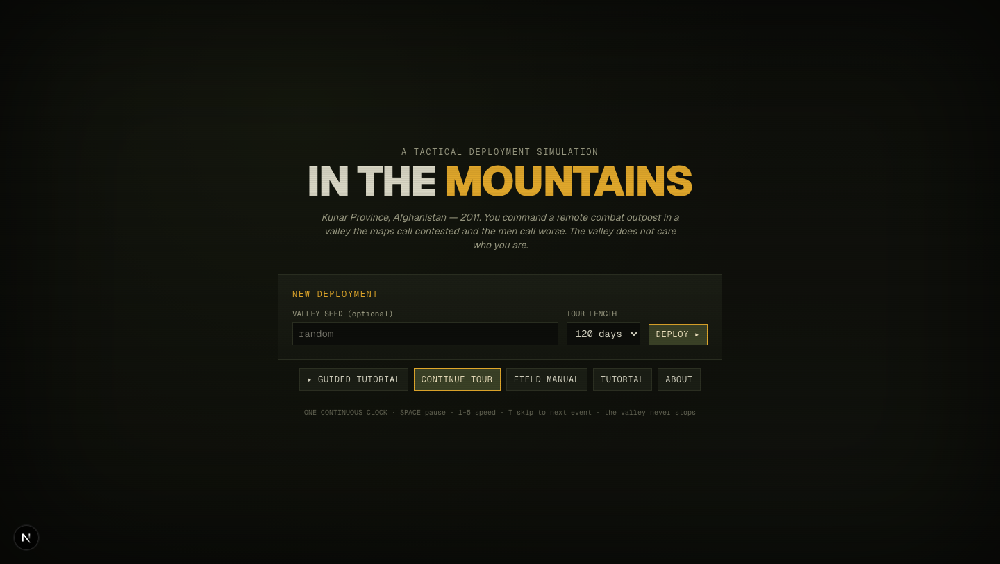
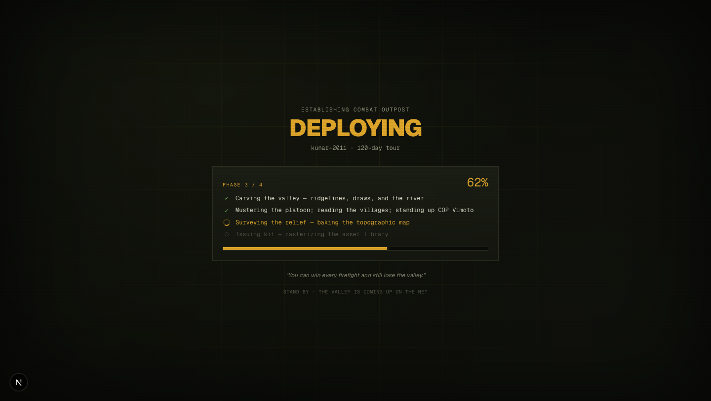
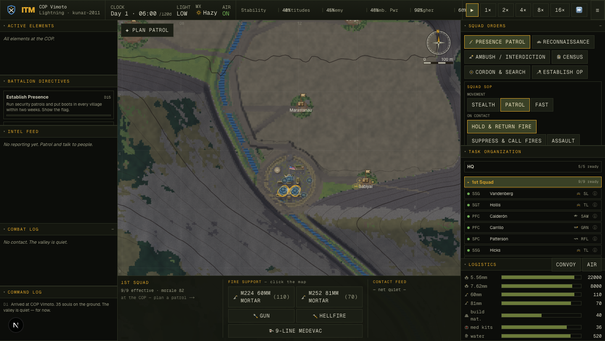

"They click Deploy and nothing happens for several seconds before the game screen. I'd like a loading screen — a spinner, a progress bar if we have one, and a list of what's happening."
Clicking Deploy called newCampaign(), which did all of the deploy
work synchronously inside the click handler and only then switched the screen. JavaScript is
single-threaded: while that work runs, the browser cannot paint. So React never got a chance to
show anything — the button just sat there, frozen, until the work was done.
To find where the seconds actually went, I drove the real running app over the Chrome DevTools Protocol and timed every phase. The result named a villain I did not expect:
| Deploy phase | Cost | Where |
|---|---|---|
| Terrain heightmap (512², rivers, roads) | ~319 ms | createTerrain() |
| Platoon, villages, civilians, COP | ~6 ms | createWorld() |
| Relief bake — a 4096² (16.7 M-pixel) shaded map | ~5,900 ms | bakeTerrain() |
| Sprite atlas (164 SVGs) | ~265 ms | loadSprites() |
| Total click → playable | ~6.5 s | all frozen, zero feedback |
The core trick is small and worth understanding. To make a loading screen actually appear, you
must let the browser paint before you start the heavy work — and a single
requestAnimationFrame fires before the paint, not after. So we wait for
two frames (the previous commit is guaranteed on-screen by the second one):
// state/store.ts — wait for the browser to ACTUALLY paint, not just schedule a frame const nextPaint = () => new Promise(res => requestAnimationFrame(() => requestAnimationFrame(() => res()))); // each phase: show it as "active" + PAINT, THEN run the (often blocking) work steps[i].status = "active"; snap(i / phases.length); await nextPaint(); // the spinner + label are on screen first await phases[i].run(report); // now block — the user is watching it happen
Three pieces make the deploy stageable without changing a single simulated value:
Generation used to build its own terrain internally. I exposed createTerrain(seed)
and let createWorld(seed, days, terrain?) accept a pre-built one, so the heightmap is
its own visible phase and is built exactly once. The terrain carries its own independent RNG, so
reusing a same-seed terrain leaves every other draw in the same order — the resulting world is
byte-identical. Proven across 5 seeds before anything else was built.
The 6-second bake was one tight pixel loop. I split it into a shared processRows(y0,y1)
used by two drivers: the original synchronous bakeTerrain (for the live-draw fallback)
and a new bakeTerrainProgressive that bakes in 40 row-bands, reports 0→1 and yields
a frame between bands, and writes into the same cache the renderer reads. So the bar
fills smoothly through the bake — and because the cache is warm, the first deploy frame is a pure
cache hit instead of a 6-second freeze.
A phase checklist (live spinner / ✓ / ○), a "PHASE n / N" + percentage, a gliding progress bar, a faint military map-grid (the valley being plotted onto a map sheet), and a rotating field-manual line. It reuses the menu's exact palette so the deploy feels continuous.



Headless capture over CDP (an isolated Chrome so it never fights the editor's browser),
with rAF throttling disabled — headless backgrounds the tab and throttles
requestAnimationFrame to ~1 Hz, which would corrupt both the timing and the yields.
Timing was read page-side through window.__ITM.subscribe, because Node-side
polling blocks behind the very main thread the bake is hogging.
| Metric | Before | After |
|---|---|---|
| Feedback after the click | none — frozen button | loading screen @ 0.2 ms |
| Progress updates during the 5.9 s bake | 0 (frozen) | 42 samples, 40 distinct % (50→75%) |
| First deploy frame | ~5.9 s bake freeze | instant (warm cache) |
| Determinism (5 seeds) | — | byte-identical |
| Total click → playable | ~6.5 s | ~6.5 s (goal was feedback, not speed) |
Standing checks: tsc · build · lint (changed files clean) · smoke (SMOKE OK) · balance (no stalls) all green.
The deploy is now covered by feedback — it is not faster. The ~6 s relief bake
is the dominant cost and was deliberately left alone: shrinking it is a real trade-off (bake
resolution vs. how crisp the relief stays when you zoom in, or moving the bake off-thread / caching
it between sessions). That's its own measured pass, logged as
docs/issues/011-deploy-relief-bake-cost.md.